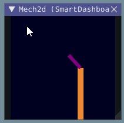

The Mechanism2d Widget
Glass supports displaying stick-figure representations of your robot’s mechanisms using the Mechanism2d widget. It supports combinations of ligaments that can rotate and / or extend or retract, such as arms and elevators and they can be combined for more complicated mechanisms. An instance of the Mechanism2d class should be created and populated, sent over NetworkTables, and updated periodically with the latest mechanism states in your robot code. It can also be used with the Physics Simulation to visualize and program your robot’s mechanisms before the robot is built.
Creating and Configuring the Mechanism2d Instance
The Mechanism2d object is the “canvas” where the mechanism is drawn. The root node is where the mechanism is anchored to Mechanism2d. For a single jointed arm this would the pivot point. For an elevator, this would be where it’s attached to the robot’s base. To get a root node (represented by a MechanismRoot2d object), call getRoot(name, x, y) on the container Mechanism2d object. The name is used to name the root within NetworkTables, and should be unique, but otherwise isn’t important. The x / y coordinate system follows the same orientation as Field2d - (0,0) is bottom left.
In the examples below, an elevator is drawn, with a rotational wrist on top of the elevator. The full Mechanism2d example is available in Java / C++
43 // the main mechanism object
44 Mechanism2d mech = new Mechanism2d(3, 3);
45 // the mechanism root node
46 MechanismRoot2d root = mech.getRoot("climber", 2, 0);
59 // the main mechanism object
60 frc::Mechanism2d m_mech{3, 3};
61 // the mechanism root node
62 frc::MechanismRoot2d* m_root = m_mech.GetRoot("climber", 2, 0);
Each MechanismLigament2d object represents a stage of the mechanism. It has a three required parameters, a name, an initial length to draw (relative to the size of the Mechanism2d object), and an initial angle to draw the ligament in degrees. Ligament angles are relative to the parent ligament, and follow math notation - the same as Rotation2d (counterclockwise-positive). A ligament based on the root with an angle of zero will point right. Two optional parameters let you change the width (also relative to the size of the Mechanism2d object) and the color. Call append()/Append() on a root node or ligament node to add another node to the figure. In Java, pass a constructed MechanismLigament2d object to add it. In C++, pass the construction parameters in order to construct and add a ligament.
48 // MechanismLigament2d objects represent each "section"/"stage" of the mechanism, and are based
49 // off the root node or another ligament object
50 m_elevator = root.append(new MechanismLigament2d("elevator", kElevatorMinimumLength, 90));
51 m_wrist =
52 m_elevator.append(
53 new MechanismLigament2d("wrist", 0.5, 90, 6, new Color8Bit(Color.kPurple)));
63 // MechanismLigament2d objects represent each "section"/"stage" of the
64 // mechanism, and are based off the root node or another ligament object
65 frc::MechanismLigament2d* m_elevator =
66 m_root->Append<frc::MechanismLigament2d>("elevator", 1, 90_deg);
67 frc::MechanismLigament2d* m_wrist =
68 m_elevator->Append<frc::MechanismLigament2d>(
69 "wrist", 0.5, 90_deg, 6, frc::Color8Bit{frc::Color::kPurple});
Then, publish the Mechanism2d object to NetworkTables:
55 // post the mechanism to the dashboard
56 SmartDashboard.putData("Mech2d", mech);
36 // publish to dashboard
37 frc::SmartDashboard::PutData("Mech2d", &m_mech);
Note
The Mechanism2d instance can also be sent using a lower-level NetworkTables API or using the Shuffleboard API. In this case, the SmartDashboard API was used, meaning that the Mechanism2d widget will appear under the SmartDashboard table name.
To manipulate a ligament angle or length, call setLength() or setAngle() on the MechanismLigament2d object. When manipulating ligament length based off of sensor measurements, make sure to add the minimum length to prevent 0-length (and therefore invisible) ligaments.
59 @Override
60 public void robotPeriodic() {
61 // update the dashboard mechanism's state
62 m_elevator.setLength(kElevatorMinimumLength + m_elevatorEncoder.getDistance());
63 m_wrist.setAngle(m_wristPot.get());
64 }
40 void RobotPeriodic() override {
41 // update the dashboard mechanism's state
42 m_elevator->SetLength(kElevatorMinimumLength +
43 m_elevatorEncoder.GetDistance());
44 m_wrist->SetAngle(units::degree_t{m_wristPotentiometer.Get()});
45 }
Viewing the Mechanism2d in Glass
After sending the Mechanism2d instance over NetworkTables, the Mechanism2d widget can be added to Glass by selecting NetworkTables in the menu bar, choosing the table name that the instance was sent over, and then clicking on the Field button.
Once the widget appears as shown below, you can resize and place it on the Glass workspace as you desire. Right-clicking the top of the widget will allow you to customize the name of the widget. As the wrist potentiometer and elevator encoder changes, the mechanism will update in the widget.
Next Steps
As mentioned above, the Mechanism2d visualization can be combined with Physics Simulation to help you program mechanisms before your robot is built. The ArmSimulation (Java / C++) and ElevatorSimulation (Java / C++) examples combine physics simulation and Mechanism2d visualization so that you can practice programing a single jointed arm and elevator without a robot.